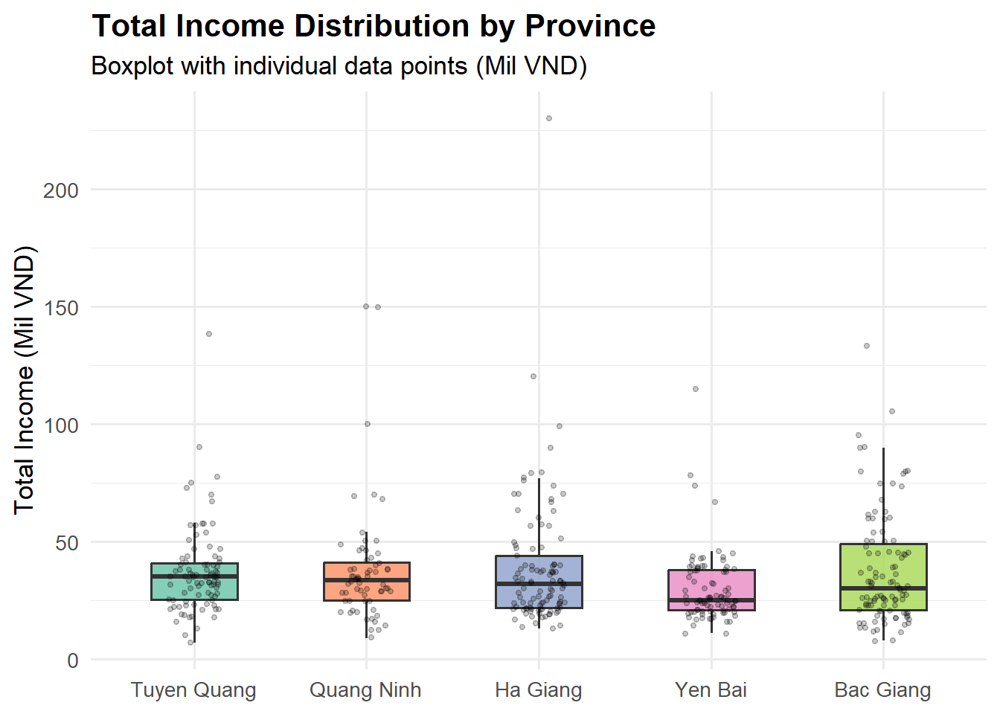
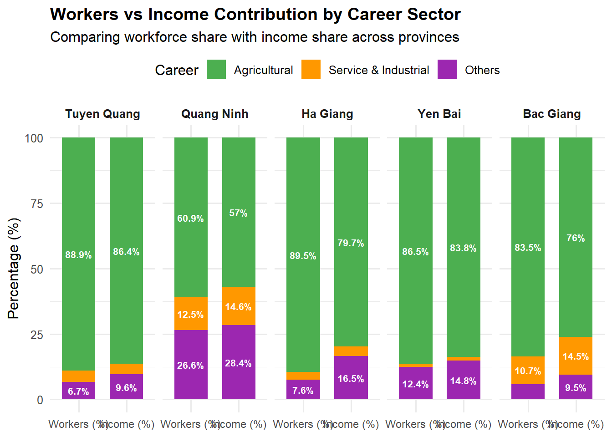
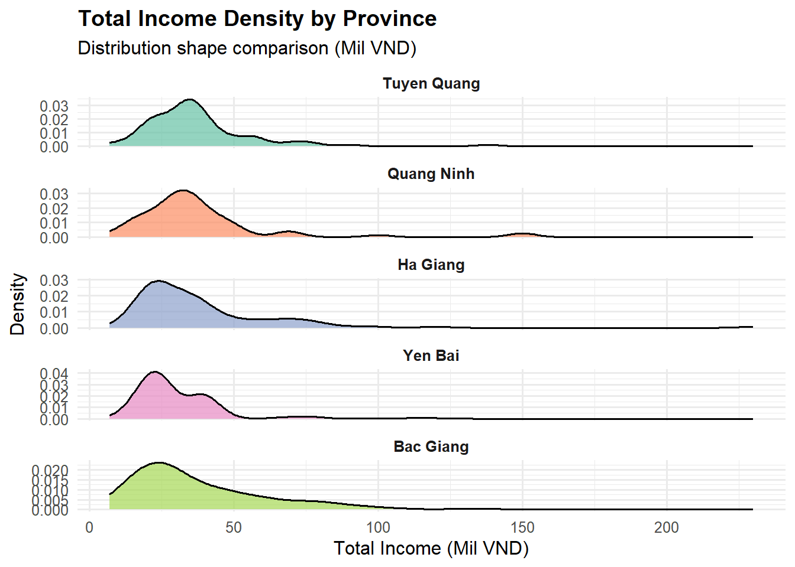
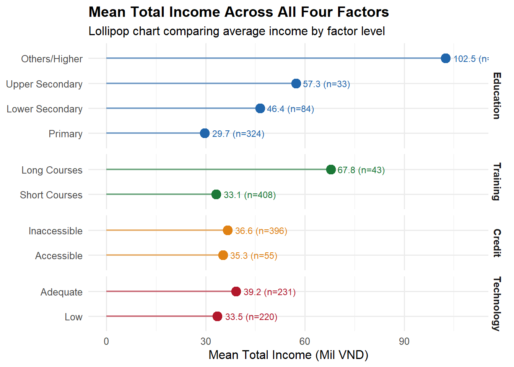
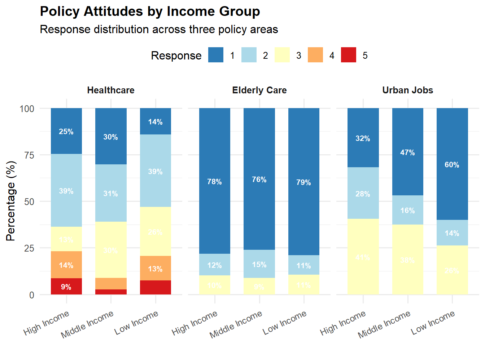
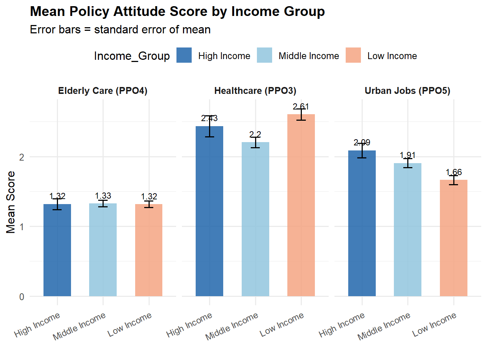
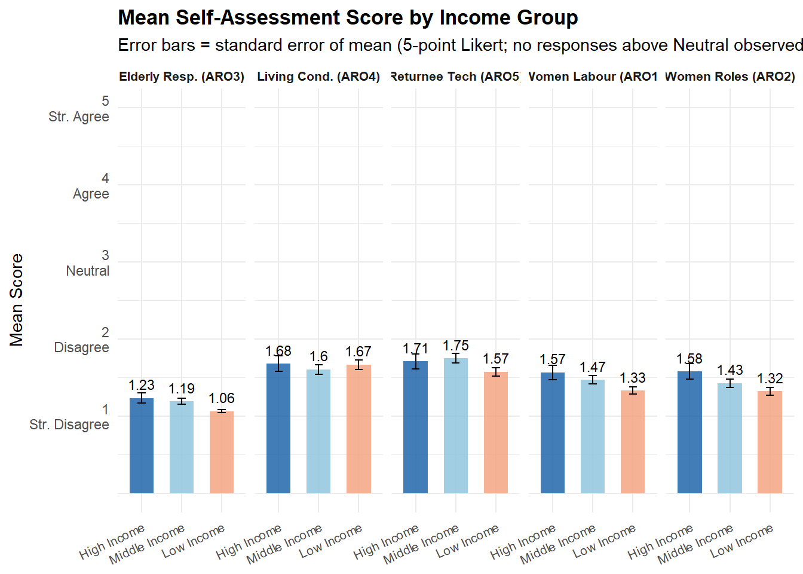

Beyond the Fields: Income Inequality and Resource Disparities Among Informal Labourers in Vietnam’s Northern Mountainous Regions
Author
Ye Zhili
Research Objectives:
This study uses real questionnaire data to focus on the income issues of informal workers in five mountainous provinces in northern Vietnam (Tuyen Quang, Quang Ninh, Ha Giang, Yen Bai, and Bac Giang). Snowball sampling was used, and the dataset contains 725 valid questionnaires, covering 29 variables including personal characteristics, income, living conditions, and policy attitudes.
This study will analyze the personal characteristics and income status of existing workers in the mountainous areas of northern Vietnam based on these variables, and explore the factors influencing income. It will also examine workers’ subjective perceptions of their living conditions.
The ultimate goal is to provide reference and suggestions for researchers and local policymakers to help improve the living conditions of rural informal workers and formulate poverty alleviation policies.
Main Observation：
This study found that informal workers in the mountainous regions of northern Vietnam are low-income and heavily reliant on agriculture, and that education and vocational training are the most effective ways to improve their situation. Workers with higher education or long-term training earn 2-3 times more than other workers, but over 70% have only received primary education, and less than 10% have received long-term training. These resource-scarce areas are extremely unevenly distributed; remote, ethnically concentrated provinces like Yen Bai and Ha Giang are precisely where the most crucial factors for income are lacking. Ethnicity and occupation, rather than gender, are the main contributors to inequality, with ethnic minorities structurally concentrated in agriculture, which offers the lowest returns. Across all income groups and occupational sectors, attitudes toward social development remain generally negative, reflecting a lack of understanding or pessimism about the potential for improvement through targeted investment in education and training infrastructure.
Data Preparation
First, import relevant library and the dataset.
library(dplyr)
Attaching package: 'dplyr'
The following objects are masked from 'package:stats':
filter, lag
The following objects are masked from 'package:base':
intersect, setdiff, setequal, union
Third,drop columns with high missing rates.Living Conditions(LHO1-4, LCRE, LSAV, LWDA) give me 22%-90% missing value so I will drop this section. Nearly 30% data are missing in PPO1 and PPO2 so I will also drop theses two variables.
Forth, some variables needed data type conversion for subsequent data analysis. Four variables were primarily converted:
CGEN (Gender): The original data consisted of text “1” and “2” instead of numbers, so it was converted to numeric.
ARO4 (Better living conditions in rural areas): A backtick caused the entire column to become character data. na_if() converts empty strings and backticks to NA, and as.numeric() converts the remaining “1”, “2”, and “3” from text to numbers.
ARO2 (Increased Woman roles in their families): One record had a value of 11. Normally, there are only three options: 1, 2, and 3, so this was deleted as an outlier.
TOIN (Other Income): Income cannot be negative, so this was also deleted as an outlier.
Research Question 1: Do different provinces differ in ethnic composition & career structure?
Key Findings:
Question 1 explores the relationship between ethnicity,privince and career.All five regions are agriculturally dominated. In Ha Giang, Bac Giang, and Tuyen Guang, agriculture accounts for over 80% of the economy, far exceeding other industries. Other industries also have a relatively high proportion, exceeding secondary and tertiary industries. Only in Bac Giang and Quang Ninh are the service and industrial sectors relatively high. The Kinh ethnic group has a wide distribution of professionals; almost all minority groups are farmers.
eth_data <- df_clean %>%count(Province, Race) %>%group_by(Province) %>%mutate(Total =sum(n), Pct = n / Total *100,Label =paste0(n, "\n(", round(Pct, 1), "%)"))ggplot(eth_data, aes(x = Province, y = Pct, fill = Race)) +geom_col(position ="stack", width =0.65) +geom_text(aes(label = Label), position =position_stack(vjust =0.5),size =3.2, color ="white", fontface ="bold") +scale_fill_manual(values =c("Kinh"="#2E86AB", "Minorities"="#E8505B")) +labs(title ="Ethnic Composition by Province",subtitle ="Percentage of Kinh vs Ethnic Minorities among surveyed labourers",x =NULL, y ="Percentage (%)", fill ="Ethnicity") +theme_minimal(base_size =13) +theme(plot.title =element_text(face ="bold"), legend.position ="top")
Show the code
career_data <- df_clean %>%count(Province, Career) %>%group_by(Province) %>%mutate(Total =sum(n), Pct = n / Total *100,Label =ifelse(Pct >=8, paste0(n, "\n(", round(Pct, 1), "%)"), ""))ggplot(career_data, aes(x = Province, y = Pct, fill = Career)) +geom_col(position ="stack", width =0.65) +geom_text(aes(label = Label), position =position_stack(vjust =0.5),size =3.2, color ="white", fontface ="bold") +scale_fill_manual(values =c("Agricultural"="#4CAF50","Service & Industrial"="#FF9800","Others"="#9C27B0")) +labs(title ="Career Structure by Province",subtitle ="Distribution of occupational sectors among surveyed labourers",x =NULL, y ="Percentage (%)", fill ="Career") +theme_minimal(base_size =13) +theme(plot.title =element_text(face ="bold"), legend.position ="top")
Show the code
cross_data <- df_clean %>%count(Race, Career) %>%group_by(Race) %>%mutate(Total =sum(n), Pct = n / Total *100,Label =paste0(n, " (", round(Pct, 1), "%)"))ggplot(cross_data, aes(x = Race, y = Pct, fill = Career)) +geom_col(position ="dodge", width =0.7) +geom_text(aes(label = Label), position =position_dodge(width =0.7),vjust =-0.5, size =3.2) +scale_fill_manual(values =c("Agricultural"="#4CAF50","Service & Industrial"="#FF9800","Others"="#9C27B0")) +labs(title ="Career Structure: Kinh vs Ethnic Minorities",subtitle ="Do ethnic minorities have less access to non-agricultural employment?",x =NULL, y ="Percentage (%)", fill ="Career") +ylim(0, 100) +theme_minimal(base_size =13) +theme(plot.title =element_text(face ="bold"), legend.position ="top")
Research Question2: Income distribution, averages, and inequality across provinces
Key Findings:
In terms of income, Yen Bai has the lowest median income, and the income of workers in this province is generally concentrated at a low level. Bac Giang has the largest dispersion, with a large number of high-income individuals. Quang Ninh and Tuyen Quang have relatively similar average incomes.
The left bar represents the percentage of people in Q1, and the right bar represents the percentage of income. It can be seen that the proportion of people engaged in agriculture is higher than the proportion of income in each province. For example, in Bac Giang, 83.5% of the population is engaged in agriculture, but contributes only 76% of the income, while the proportion of people in the non-agricultural sector is lower than the proportion of income. This indicates that the average income of non-agricultural workers is higher.
The income distribution in all provinces is significantly right-skewed, with most workers concentrated in the low-income range, and a small number of people extending the right tail. Yen Bai has the highest and narrowest density peak, indicating that income is highly concentrated in the 20-30M range with small internal differences. Bac Giang has the flattest distribution and the largest income range. Ha Giang’s right tail extends to 230M, indicating a smaller number of high-income individuals.
Bac Giang’s curve is furthest from the diagonal, indicating the highest degree of income inequality within the province. Yen Bai and Tuyen Quang’s curves are closest to the diagonal, indicating a relatively even distribution of income.
ggplot(df_clean, aes(x = Province, y = TEIN, fill = Province)) +geom_boxplot(width =0.5, outlier.shape =NA, alpha =0.8) +geom_jitter(width =0.15, alpha =0.2, size =1) +scale_fill_brewer(palette ="Set2") +labs(title ="Total Income Distribution by Province",subtitle ="Boxplot with individual data points (Mil VND)",x =NULL, y ="Total Income (Mil VND)") +theme_minimal(base_size =13) +theme(plot.title =element_text(face ="bold"), legend.position ="none")

Show the code
worker_share <- df_clean %>%count(Province, Career) %>%group_by(Province) %>%mutate(Pct = n /sum(n) *100) %>%ungroup() %>%select(Province, Career, Pct) %>%mutate(Type ="Workers (%)")income_share <- df_clean %>%group_by(Province, Career) %>%summarise(Total =sum(TEIN), .groups ="drop") %>%group_by(Province) %>%mutate(Pct = Total /sum(Total) *100) %>%ungroup() %>%select(Province, Career, Pct) %>%mutate(Type ="Income (%)")combined <-bind_rows(worker_share, income_share) %>%mutate(Type =factor(Type, levels =c("Workers (%)", "Income (%)")),Label =ifelse(Pct >=6, paste0(round(Pct, 1), "%"), ""))ggplot(combined, aes(x = Type, y = Pct, fill = Career)) +geom_col(position ="stack", width =0.7) +geom_text(aes(label = Label),position =position_stack(vjust =0.5),size =2.8, color ="white", fontface ="bold") +facet_wrap(~Province, nrow =1) +scale_fill_manual(values =c("Agricultural"="#4CAF50","Service & Industrial"="#FF9800","Others"="#9C27B0")) +labs(title ="Workers vs Income Contribution by Career Sector",subtitle ="Comparing workforce share with income share across provinces",x =NULL, y ="Percentage (%)", fill ="Career") +theme_minimal(base_size =12) +theme(plot.title =element_text(face ="bold"),legend.position ="top",strip.text =element_text(face ="bold"),axis.text.x =element_text(size =9))

Show the code
ggplot(df_clean, aes(x = TEIN, fill = Province)) +geom_density(alpha =0.7) +facet_wrap(~Province, ncol =1, scales ="free_y") +scale_fill_brewer(palette ="Set2") +labs(title ="Total Income Density by Province",subtitle ="Distribution shape comparison (Mil VND)",x ="Total Income (Mil VND)", y ="Density") +theme_minimal(base_size =12) +theme(plot.title =element_text(face ="bold"),legend.position ="none",strip.text =element_text(face ="bold"))

Show the code
lorenz_data <- df_clean %>%group_by(Province) %>%arrange(TEIN, .by_group =TRUE) %>%mutate(cum_pop =row_number() /n(),cum_income =cumsum(TEIN) /sum(TEIN)) %>%ungroup()equality <-data.frame(x =c(0, 1), y =c(0, 1))ggplot(lorenz_data, aes(x = cum_pop, y = cum_income, color = Province)) +geom_line(linewidth =1) +geom_line(data = equality, aes(x = x, y = y), color ="grey40",linetype ="dashed", linewidth =0.8, inherit.aes =FALSE) +scale_color_brewer(palette ="Set2") +labs(title ="Lorenz Curves by Province",subtitle ="Further from the diagonal = greater inequality",x ="Cumulative Share of Population",y ="Cumulative Share of Income") +coord_equal() +theme_minimal(base_size =13) +theme(plot.title =element_text(face ="bold"), legend.position ="right")
Research Question3: How do education, training, credit, and technology relate to income?
Key Findings:
The first chart clearly shows a step-like upward trend in income related to education level. However, the box also widens with increasing education level, indicating a greater income disparity among those with higher education.
In the second chart, among the three similar factors, Training has the same education level as in the first chart, with longer training periods resulting in higher income. Technology shows relatively small differences, possibly because most people are engaged in agriculture. Credit shows almost no difference, and those who obtain credit even have slightly lower incomes, possibly because the loan recipients are predominantly low-income groups.
Of the four factors, Education and Training have the greatest impact on income, far exceeding the other groups. The inter-group differences in Credit and Technology are small.
Overall, education and vocational training, especially long-term courses are the most critical factors affecting the income of informal workers. Credit access and technology application have a weaker impact, possibly because these resources have not yet been effectively converted into productivity gains.
summary_data <-bind_rows( df_clean %>%group_by(Level = Education) %>%summarise(Mean =mean(TEIN), N =n(), .groups ="drop") %>%mutate(Factor ="Education"), df_clean %>%group_by(Level = Training) %>%summarise(Mean =mean(TEIN), N =n(), .groups ="drop") %>%mutate(Factor ="Training"), df_clean %>%group_by(Level = Credit) %>%summarise(Mean =mean(TEIN), N =n(), .groups ="drop") %>%mutate(Factor ="Credit"), df_clean %>%group_by(Level = Technology) %>%summarise(Mean =mean(TEIN), N =n(), .groups ="drop") %>%mutate(Factor ="Technology")) %>%mutate(Factor =factor(Factor, levels =c("Education", "Training", "Credit", "Technology")),Label =paste0(round(Mean, 1), " (n=", N, ")"))ggplot(summary_data, aes(x = Mean, y =reorder(Level, Mean), color = Factor)) +geom_point(size =4) +geom_segment(aes(xend =0, yend =reorder(Level, Mean)), linewidth =0.8, alpha =0.6) +geom_text(aes(label = Label), hjust =-0.15, size =3.2) +facet_grid(Factor ~ ., scales ="free_y", space ="free_y") +scale_color_manual(values =c("Education"="#2166ac", "Training"="#1b7837","Credit"="#e08214", "Technology"="#b2182b")) +labs(title ="Mean Total Income Across All Four Factors",subtitle ="Lollipop chart comparing average income by factor level",x ="Mean Total Income (Mil VND)", y =NULL) +xlim(0, 110) +theme_minimal(base_size =12) +theme(plot.title =element_text(face ="bold"),legend.position ="none",strip.text =element_text(face ="bold"))

Research Question4: Do provinces differ in access to education, training, credit, and technology?
Key Findings:
Education levels are low across all five provinces, with most people having only a primary school education. Yen Bai is the worst affected, with 84.3% having only a primary school education. Tuyen Quang is relatively better, with nearly 44% reaching Lower Secondary or higher. Higher education resources are extremely scarce in these mountainous regions.
A heatmap reveals the differences across the provinces across three dimensions. Technology is the most widely covered resource, while Long Courses, Training, and Credit are extremely low. Tuyen Quang has the most balanced access to resources. Ha Giang has the lowest Technology access, likely due to its 93% agricultural sector.
Figure 3 clearly shows that all provinces have the highest Technology coverage, while Long Courses and Credit Access are extremely low. Tuyen Quang is highest across all four dimensions, while Yen Bai is weakest in Education and Training. Q3 found that Education and Training are the factors most influencing income, explaining why Yen Bai has the lowest income.
Research Question5: What is the correlation between Income, Policy & Assessment Variables
Key Findings:
Continuous numerical variables from the survey were selected, and hierarchical clustering divided the 12 variables into three groups: income variables (TEIN/TAIN/TSII/TOIN) and attitude variables (ARO/PPO). While there was moderate correlation within these groups, the correlation between income and attitude was generally weak. This suggests that income level does not directly determine workers’ views on policies. Q5 and Q6 further validated this finding using group comparisons.
Research Question6: Do income groups differ in policy attitudes?
Key Findings:
All income groups showed relatively high support for healthcare policies. This was the only variable with a “Strongly Agree” response. PPO4 (Elderly Care) and PPO5 (Urban Jobs) showed very similar distributions across the three income groups, with 70% indicating they did not need the policy, confirming the low correlation between income and policy attitudes in the corrplot. The only difference was that in PPO5 (Obtaining Urban Jobs), the proportion of those selecting “strongly disagree” in the Low Income group was significantly higher than in the High Income group, indicating that the demand for urban employment in the low-income group was far less than that in the high-income group. High-income earners may have more experience in non-agricultural employment and a better understanding of the value of urban employment; low-income earners, having long been engaged in agriculture, lack awareness or confidence in urban employment.
ppo_labels <-c("PPO3"="Healthcare", "PPO4"="Elderly Care", "PPO5"="Urban Jobs")ppo_data <- df_clean %>%select(Income_Group, PPO3, PPO4, PPO5) %>%pivot_longer(-Income_Group, names_to ="Policy", values_to ="Response") %>%mutate(Policy =factor(Policy, levels =c("PPO3", "PPO4", "PPO5")),Response =factor(Response))ppo_pct <- ppo_data %>%count(Income_Group, Policy, Response) %>%group_by(Income_Group, Policy) %>%mutate(Pct = n /sum(n) *100,Label =ifelse(Pct >=8, paste0(round(Pct, 0), "%"), "")) %>%ungroup()ggplot(ppo_pct, aes(x = Income_Group, y = Pct, fill = Response)) +geom_col(position ="stack", width =0.7) +geom_text(aes(label = Label), position =position_stack(vjust =0.5),size =2.8, color ="white", fontface ="bold") +facet_wrap(~Policy, labeller =labeller(Policy = ppo_labels)) +scale_fill_brewer(palette ="RdYlBu", direction =-1) +labs(title ="Policy Attitudes by Income Group",subtitle ="Response distribution across three policy areas",x =NULL, y ="Percentage (%)", fill ="Response") +theme_minimal(base_size =12) +theme(plot.title =element_text(face ="bold"),legend.position ="top",strip.text =element_text(face ="bold"),axis.text.x =element_text(angle =25, hjust =1, size =9))

Show the code
ppo_means <- df_clean %>%select(Income_Group, PPO3, PPO4, PPO5) %>%pivot_longer(-Income_Group, names_to ="Policy", values_to ="Score") %>%mutate(Policy_Label =recode(Policy,"PPO3"="Healthcare (PPO3)","PPO4"="Elderly Care (PPO4)","PPO5"="Urban Jobs (PPO5)")) %>%group_by(Income_Group, Policy_Label) %>%summarise(Mean =mean(Score), SE =sd(Score) /sqrt(n()), .groups ="drop")ggplot(ppo_means, aes(x = Income_Group, y = Mean, fill = Income_Group)) +geom_col(width =0.6, alpha =0.85) +geom_errorbar(aes(ymin = Mean - SE, ymax = Mean + SE), width =0.2) +geom_text(aes(label =round(Mean, 2)), vjust =-0.8, size =3.2) +facet_wrap(~Policy_Label) +scale_fill_manual(values =c("High Income"="#2166ac","Middle Income"="#92c5de","Low Income"="#f4a582")) +labs(title ="Mean Policy Attitude Score by Income Group",subtitle ="Error bars = standard error of mean",x =NULL, y ="Mean Score") +theme_minimal(base_size =12) +theme(plot.title =element_text(face ="bold"),legend.position ="top",strip.text =element_text(face ="bold"),axis.text.x =element_text(angle =25, hjust =1, size =9))

Research Question7: Do income groups differ in self-assessment?
Key Findings:
Respondents across all five categories overwhelmingly expressed a “Strongly Disagree,” with no one selecting “Agree” or “Strongly Agree.” Respondents from all five provinces generally had a very negative self-assessment. Regarding retirement responsibility, 95% of those in the Low Income category chose “Strongly Disagree.”
Regarding inter-group differences, the low-income group was more concentrated on “Strongly Disagree” across all five categories, while the high-income group was more dispersed, with more people choosing “Disagree” and “Neutral.” The mean score for the high-income group was consistently higher than that for the low-income group, indicating that high-income earners have higher satisfaction with their situation.
aro_means <- df_clean %>%select(Income_Group, ARO1, ARO2, ARO3, ARO4, ARO5) %>%pivot_longer(-Income_Group, names_to ="Item", values_to ="Score") %>%mutate(Item_Label =recode(Item,"ARO1"="Women Labour (ARO1)","ARO2"="Women Roles (ARO2)","ARO3"="Elderly Resp. (ARO3)","ARO4"="Living Cond. (ARO4)","ARO5"="Returnee Tech (ARO5)")) %>%group_by(Income_Group, Item_Label) %>%summarise(Mean =mean(Score), SE =sd(Score) /sqrt(n()), .groups ="drop")ggplot(aro_means, aes(x = Income_Group, y = Mean, fill = Income_Group)) +geom_col(width =0.6, alpha =0.85) +geom_errorbar(aes(ymin = Mean - SE, ymax = Mean + SE), width =0.2) +geom_text(aes(label =round(Mean, 2)), vjust =-0.8, size =3) +facet_wrap(~Item_Label, nrow =1) +scale_fill_manual(values =c("High Income"="#2166ac","Middle Income"="#92c5de","Low Income"="#f4a582")) +scale_y_continuous(limits =c(0, 5), breaks =1:5,labels =c("1\nStr. Disagree", "2\nDisagree","3\nNeutral", "4\nAgree", "5\nStr. Agree")) +labs(title ="Mean Self-Assessment Score by Income Group",subtitle ="Error bars = standard error of mean (5-point Likert; no responses above Neutral observed)",x =NULL, y ="Mean Score") +theme_minimal(base_size =11) +theme(plot.title =element_text(face ="bold"),legend.position ="none",strip.text =element_text(face ="bold", size =8),axis.text.x =element_text(angle =25, hjust =1, size =8))

Research Question 8: Income gap between agricultural and non-agricultural workers and their attitudes toward policies and individuals
Key Findings:
Non-agricultural income is significantly higher than agricultural income. Others income is higher than Service & Industrial, which in turn is higher than Agricultural income. The median and upper quartile of the non-agricultural sector are also higher than those of agriculture, but the dispersion is also greater. The Service & Industrial sector has a wider range, indicating greater income variability within this sector. While Agricultural has the lowest mean, it has the highest concentration, with most people concentrated in the 20-40 million VND range.
It was also found that income sources for workers in mountainous areas are generally mixed, with very few purely agricultural or purely non-agricultural workers. Agricultural workers’ income is not entirely from agriculture; they have an average of 6.1 million in other income and 3.9 million in service/industrial income. The Service & Industrial group is most notable for its high proportion of “other income” at 17.7 million, which, combined with agricultural income of 20.3 million, indicates that these individuals also engage in agricultural activities. The Others group has the highest “other income” and the highest total average income.
Of the three attitudes across different income groups, the Others group is closer to neutral in all three aspects, while the Agricultural group is most concentrated at the Strongly Disagree end. The differences were most pronounced in PPO5: 52% of the Others group rated it as “neutral” or higher, compared to only 31% for Agricultural. ARO5 showed a similar pattern: 41% of Service & Industrial rated it as “neutral,” while only 20% rated it as “Agricultural.” This suggests that non-agricultural workers have a more positive view of urban employment and skills repatriation.
Research Question9：Is there a significant income gap between men and women in rural areas? Do women perceive that they have risen in social status?
Key Findings:
The first chart shows a very small gender income gap, but men’s income is significantly more dispersed, with high-income earners almost exclusively men, while women’s income is more concentrated in the 20-50 million range. Although average incomes are similar, income inequality is more severe among men.
The second chart reveals that women are less likely than men to engage in pure agriculture, with more concentrated in Service & Industrial and Others sectors. This indicates greater female participation in non-agricultural economic activities. In terms of income structure, the two genders are also very similar. Agricultural income dominates for both, but women’s share in Service & Industrial and Others is slightly higher than men’s.
Regarding attitudes on women’s issues, both genders generally show a strong disagreement, but women’s attitudes on “Women Roles in Families” differ slightly. 24% of women chose “Neutral,” higher than the 15% of men. This may suggest that women have a more moderate view of changes in their family roles than men.